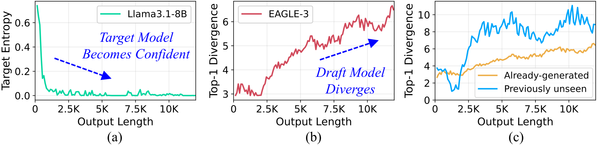
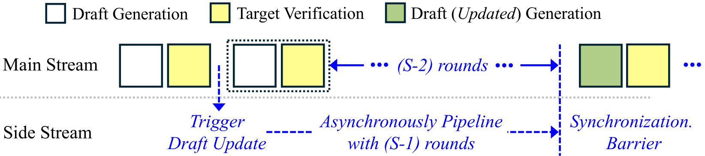
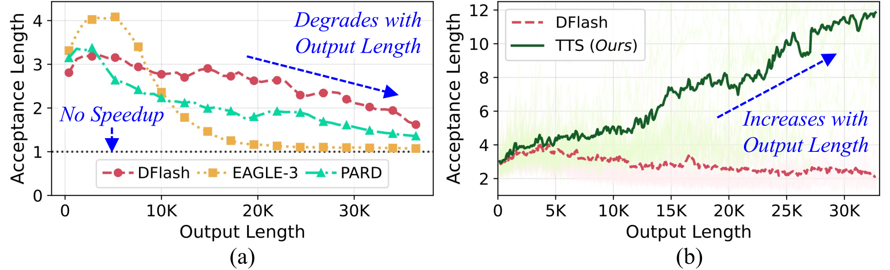
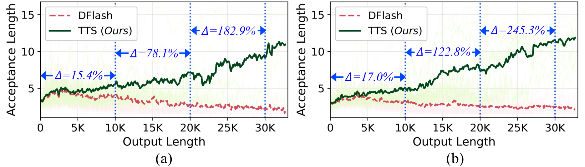
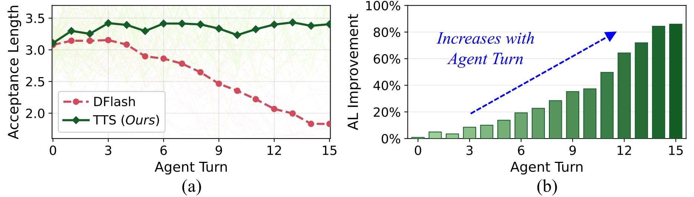
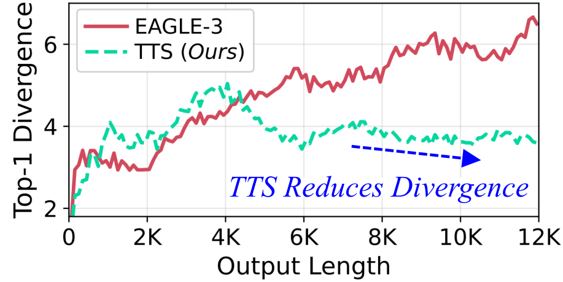

The speedup from speculative decoding comes down to one number: the acceptance length, or how many draft tokens the target accepts per round. An acceptance length near 1 means the draft is contributing nothing.
That is where today's best speculators end up. DFlash, EAGLE-3 and PARD all start strong, then lose ground as the response grows. On LiveCodeBench with Qwen3-8B, EAGLE-3's acceptance length falls to 1.1 beyond about 20K tokens. Reasoning, coding and agentic workloads routinely produce outputs that long.
Tokens accepted per round, measured at each point of the output; 1 means no speedup. Pick a speculator and a target model.
A bigger target does not fix it, and neither does a different speculator. The same decline shows up across every pair above, from 8B to 122B targets.
Why does this happen? Speculators are trained offline on instruction-following data such as ShareGPT and UltraChat, where a response is a few hundred tokens long. A reasoning model answering a benchmark question writes tens of thousands of tokens. The two barely overlap.
Tokens on a log scale. Each dot is one response from Qwen3-8B with thinking enabled.
Generation was capped at 36,864 tokens, so the longest outputs pile up at that limit.
0.19.2rc1.dev208 (commit 1e9f19ca3) with a small scheduler patch that logs the drafted and accepted tokens of every speculation round. PyTorch 2.11, NVIDIA H200 GPUs.Speculators are small networks trained offline on short sequences, typically under 2K tokens. At inference they are asked to track the target across outputs many times longer, well outside what they saw in training.
The entropy curves show the two models pulling apart. As the output grows, the target becomes more confident about the next token. Over the same stretch, the draft becomes less able to predict the target's top choice. This happens for tokens that already appeared in the context and for unseen ones alike.

Closing the gap means adapting the draft at inference time.
Each round of speculative decoding runs the target over every draft token to verify it. That pass produces the target's full distribution at each position, which is exactly the supervision a distillation step needs. Standard speculative decoding uses it to accept or reject, then throws it away.
TTS keeps it. The target is the teacher, the draft is the student, and each verified canvas is a training sample. After verification the draft takes one gradient step, then drafts again.
The current draft \(q_t\) proposes a canvas of \(C\) tokens, as in ordinary speculative decoding.
The target \(p\) scores the whole canvas in one forward pass and accepts a prefix by rejection sampling. The output distribution is exactly the target's.
The draft takes one gradient step toward the target's distributions on that canvas, with a regularizer that keeps it close to where it was.
Early canvas positions get larger weights \(w_k\), since one rejection discards everything after it. TTS reuses the weights from each speculator's own training recipe.
A backward pass every round costs time, so higher acceptance length alone does not guarantee higher throughput. Two system choices close that gap.
TTS updates once every \(\mathcal{S}\) rounds and runs the update on a side CUDA stream, in parallel with the next \(\mathcal{S}-1\) speculate-verify rounds. The update stays off the critical path.
In a batch, one request's update must not disturb another's draft. TTS freezes the shared speculator and gives each request its own rank-16 LoRA adapter: 7.9 MB per GPU on GPT-OSS-120B, versus about 1270 MB for a full private copy.

Evaluated on DFlash, EAGLE-3 and PARD across the Qwen-3, Qwen-3.5, DeepSeek-R1, GPT-OSS, MiniMax and Llama3.1 families.

Each update leaves the draft a little better matched to the response in progress, so the advantage compounds as generation continues.

On multi-turn agentic tasks from OpenThoughts with MiniMax-M2.5, DFlash loses acceptance length turn after turn. TTS holds it, and its lead reaches 86% at turn 15.

Tokens per second on GPT-OSS-120B against NVIDIA's EAGLE-3 speculator, with per-request LoRA adapters and \(\mathcal{S}=10\). TTS is 1.3–1.8× faster at every batch size and benchmark. For a single request on Qwen3.5-122B, a stride of 5 gives 1.54× over DFlash on average and up to 1.71×.
| Benchmark | Approach | BS = 8 | BS = 16 | BS = 32 | BS = 64 |
|---|---|---|---|---|---|
| AIME 2024 | EAGLE-3 | 338.6 | 526.9 | 767.6 | 877.8 |
| TTS | 527.61.56× | 708.11.34× | 1264.01.65× | 1353.11.54× | |
| AIME 2025 | EAGLE-3 | 354.1 | 536.4 | 877.5 | 1053.1 |
| TTS | 480.31.36× | 858.81.60× | 1285.71.47× | 1509.61.43× | |
| GPQA Diamond | EAGLE-3 | 360.3 | 562.7 | 865.5 | 1009.4 |
| TTS | 531.91.48× | 884.91.57× | 1328.41.53× | 1635.71.62× | |
| LiveCodeBench | EAGLE-3 | 330.2 | 425.4 | 752.9 | 820.5 |
| TTS | 454.71.38× | 771.41.81× | 1141.71.52× | 1341.11.63× |
Back to the diagnosis: with TTS, the draft's cross-entropy on the target's top choice no longer climbs the way it does for the frozen draft.

Speculative decoding accelerates LLM inference by using a fast draft model to generate tokens and a more accurate target model to verify them. Its performance depends on the acceptance length, or number of draft tokens accepted by the target. Our studies show that the acceptance length of even state-of-the-art speculators, like DFlash, EAGLE-3, and PARD, degrades with generation length, reaching values close to 1 (i.e., no speedup) within a few thousand output tokens, making speculators ineffective for long-response tasks. Acceptance lengths decline because most speculators are trained offline on short sequences, but are forced to match the target on much longer outputs at inference, well beyond their training distribution.
To address this issue, we propose Test-Time Speculation (TTS), an online distillation approach that continuously adapts the speculator at test time. TTS leverages the key insight that the token verification step already invokes the target model for each draft token, providing the training signal needed to adapt the draft at no additional cost. Treating the draft as the student and the target as the teacher, TTS adjusts the draft over several speculation rounds, with each update improving the draft's accuracy as generation proceeds. Our results across ten models from the Qwen-3, Qwen-3.5, DeepSeek-R1, GPT-OSS, MiniMax, and Llama3.1 families show that TTS improves acceptance lengths over state-of-the-art speculators by up to 72% and 41% on average, with the benefits scaling with generation lengths.
@inproceedings{kumar2026test,
title = {Test-Time Speculation},
author = {Kumar, Avinash and Sanghavi, Sujay and Das, Poulami},
booktitle = {Advances in Neural Information Processing Systems},
year = {2026}
}